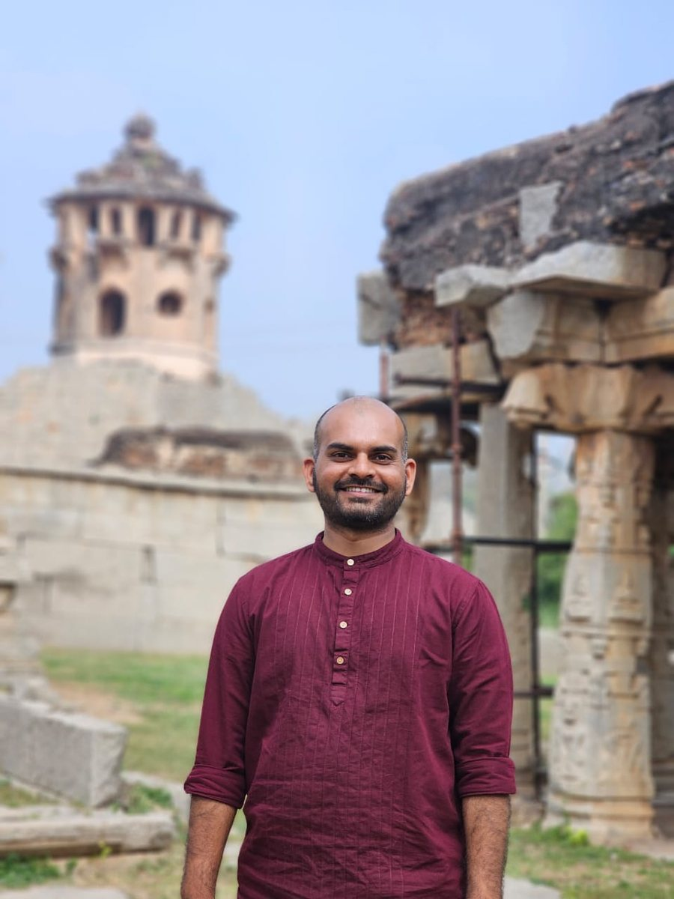

Dr. Gajanan Kendre
Assistant Professor & Principal Investigator
Department of Life Science, National Institute of Technology Rourkela
Trained in molecular medicine at Hannover Medical School, Dr. Kendre studies how the genetic context of a tumour determines its response to targeted therapy, with a particular focus on liver cancer and cholangiocarcinoma.
PhD Scholars
Select a card to read about each project.
Dissertation Students
M.Sc. and Integrated M.Sc. students currently doing their dissertation in the lab.
Alumni
Dissertation students
M.Sc. and Integrated M.Sc. students who completed their dissertation in the lab.
Summer research interns
Visiting students who spent a summer at the bench with us.
Sayantani Tripathy
Dept. of Biotechnology & Bioinformatics, Sambalpur University
Stiti Pragyan Mishra
Dept. of Biotechnology & Bioinformatics, Sambalpur University
Nikita Tripathy
Dept. of Biotechnology & Bioinformatics, Sambalpur University
Interested in joining?
We welcome PhD applicants, postdoctoral fellows and project students who are curious about precision oncology and synthetic biology.
Madan Mohan Mishra
Doctoral Researcher · joined January 2024
Thesis: Role of BAP1 Co-mutation in FGFR2 Fusion Cholangiocarcinoma
Madan investigates how loss of the tumour suppressor BAP1 changes the behaviour of FGFR2 fusion-positive cholangiocarcinoma cells. The FGFR2 fusion is a druggable driver, but patients respond to FGFR inhibitors very unevenly, and a co-occurring BAP1 mutation is one of the differences between them. He is asking whether that co-mutation alters chromatin state, genomic stability and, ultimately, how well the drug works.
- M.Sc.
- Sambalpur University, Odisha
Madan can take an instrument apart and have it working again before anyone thinks to call support. He is also, by common consent, the person the group sends when something needs negotiating.
Saloni Panda
Doctoral Researcher · joined July 2024
Thesis: Host Genetics of Liver Fibrosis and Phytocompound-Based Intervention
Saloni works at the intersection of host genetics and liver disease. Her research focuses on understanding the genetic basis of liver fibrosis and exploring phytocompound-based interventions as potential therapeutic strategies, with an interest in translating molecular insights into meaningful clinical applications.
- M.Phil. Biotechnology
- Sambalpur University, Odisha
- M.Sc. Life Science
- Sambalpur University, Odisha
- B.Sc. Botany
- Govt. Autonomous College, Bhawanipatna
- Qualified
- CSIR-NET (LS) 2025 · GATE LS 2024
Saloni sings — reliably the first person handed the microphone.
Aniruddha Banerjee
Doctoral Researcher · joined July 2023
Thesis: Deciphering the Role of Inter-domain Crosstalk in Oral Squamous Cell Carcinoma (OSCC)
Aniruddha investigates bacterial signalling networks within the host microenvironment and how inter-kingdom communication shapes cellular homeostasis, immune regulation and oral carcinogenesis. He engineers synthetic genetic circuits of bacterial and host origin to decode these signals and reprogram cellular responses, enabling mechanistic insights into host–microbe interactions.
- B.Sc. Microbiology
- Michael Madhusudan Memorial College
- M.Sc. Microbiology
- Tripura University (Central University)
- Qualified
- DST INSPIRE Fellow (SRF) · GATE (BT) 2024 · WBSET 2024
Aniruddha enjoys travelling, photography and good food — always exploring, capturing and discovering new connections, in life and in science.
Avijit Banerjee
Doctoral Researcher · joined January 2026
Thesis: Synthetic Biology and Engineered Cancer Killing Switches
Avijit designs genetic circuits that sense a cancer cell and act on it — kill switches that stay silent in healthy tissue and turn on only when the right combination of molecular conditions is present. The work sits between synthetic biology and cancer therapeutics, and the hard part is the specificity rather than the killing.
Avijit is a poetry enthusiast and writer who finds inspiration in nature, weaving words to explore the stories and existence hidden in its shadows.
Silky Biswal
Doctoral Researcher · joined January 2026
Thesis: The Influence of Y Chromosome-Linked Genes on Liver Fibrosis: Insights into Male-Specific Mechanisms
Silky studies why liver fibrosis progresses so differently in men. Her project focuses on Y chromosome-linked genes and the male-specific mechanisms through which they may accelerate — or restrain — the laying down of scar tissue in chronic liver injury.
Silky plays music and photographs the things the rest of us walk past.
Abhishek Gurjar
Integrated M.Sc. Dissertation · 2026–27
Manit Palnial
M.Sc. Dissertation · 2026–27
Solanki Ankit Mahesh
M.Sc. Dissertation · 2026–27